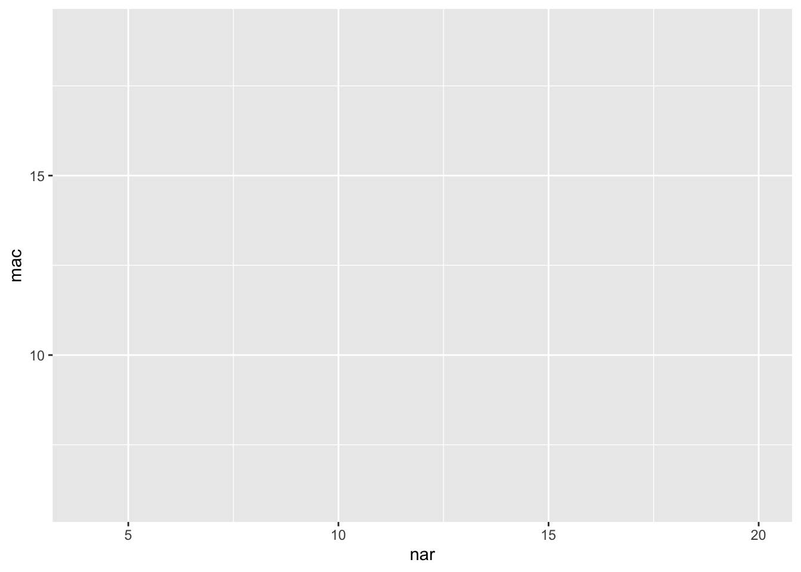
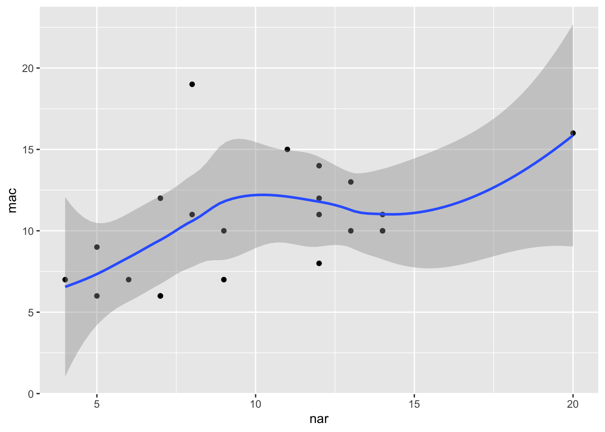
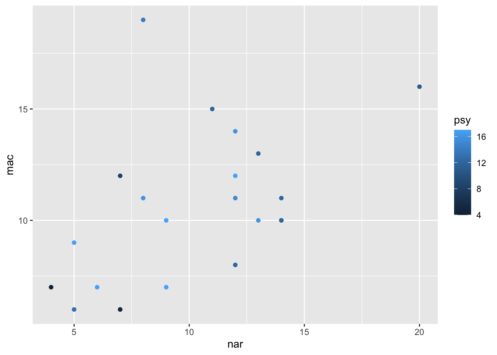
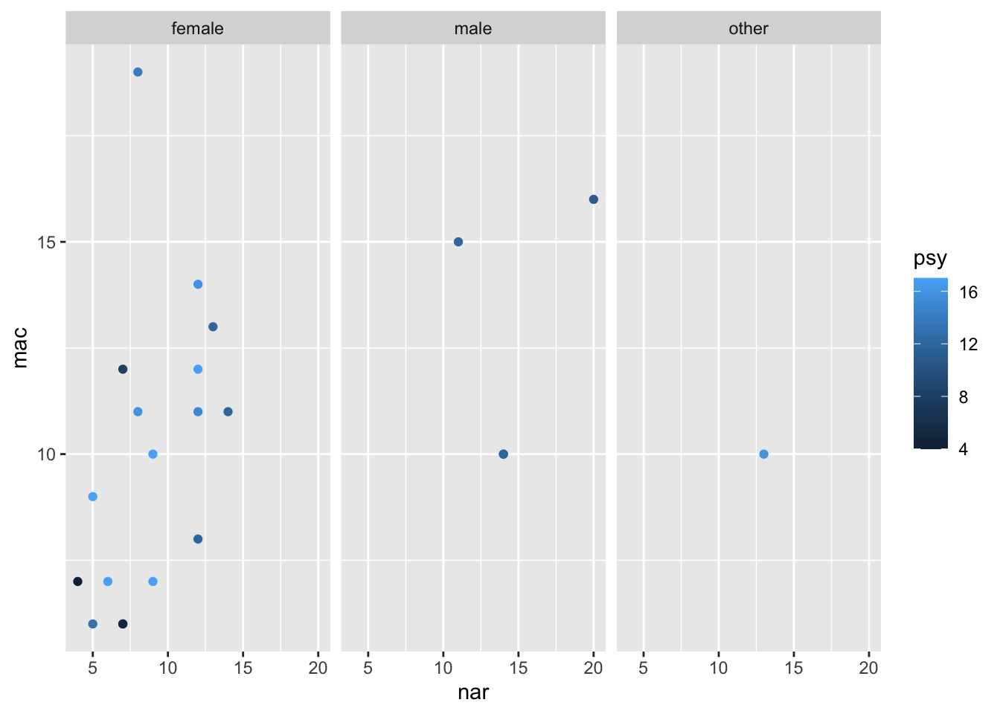
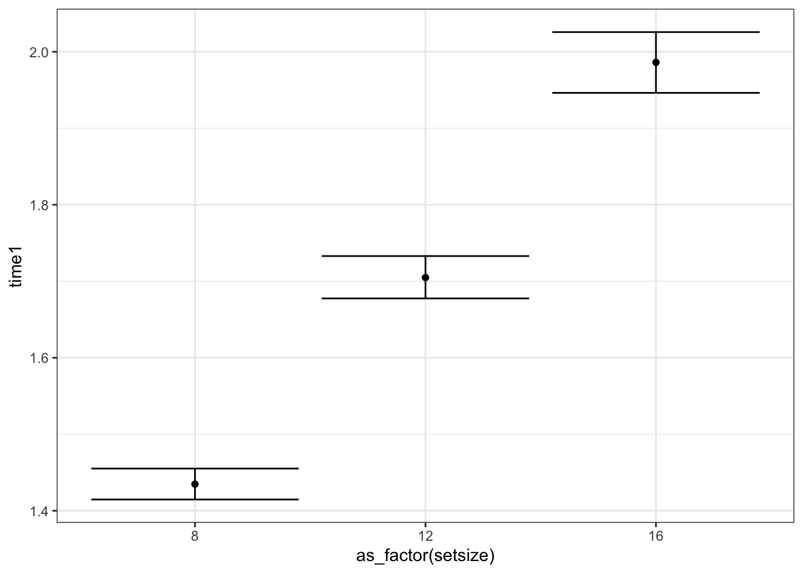

ggplot2 — это внешний пакет языка R, который позволяет строить красивые и сложные визуализации. Как и любой R-пакет, это набор функций, которые позволяют делать те или иные преобразования с графиками. Пакет ggplot2 является частью семейства пакетов tidyverse.
library(tidyverse)
── Attaching core tidyverse packages ──────────────────────── tidyverse 2.0.0 ──
✔ dplyr 1.1.4 ✔ readr 2.1.5
✔ forcats 1.0.0 ✔ stringr 1.5.1
✔ ggplot2 3.5.2 ✔ tibble 3.2.1
✔ lubridate 1.9.4 ✔ tidyr 1.3.1
✔ purrr 1.0.4
── Conflicts ────────────────────────────────────────── tidyverse_conflicts() ──
✖ dplyr::filter() masks stats::filter()
✖ dplyr::lag() masks stats::lag()
ℹ Use the conflicted package (<http://conflicted.r-lib.org/>) to force all conflicts to become errors
Rows: 22 Columns: 6
── Column specification ────────────────────────────────────────────────────────
Delimiter: ","
chr (1): gender
dbl (5): age, class, mac, nar, psy
ℹ Use `spec()` to retrieve the full column specification for this data.
ℹ Specify the column types or set `show_col_types = FALSE` to quiet this message.
Rows: 16200 Columns: 8
── Column specification ────────────────────────────────────────────────────────
Delimiter: " "
chr (2): trialtype, platform
dbl (4): setsize, time1, time2, id
lgl (2): correct1, correct2
ℹ Use `spec()` to retrieve the full column specification for this data.
ℹ Specify the column types or set `show_col_types = FALSE` to quiet this message.
22.3 Философия A Layered Grammar of Graphics
Идея, воплощенная в ggplot2, восходит к работе L. Wilkinson «The Grammar of Graphics». Базируясь на идеях, изложенных в этой работе, Hadley Wickham разработал концепцию Layered Grammar of Graphics и создал мощный пакет для визуализации, ради которого мы все здесь собрались. Автором по этому пакету написана целая книга, но мы сосредоточимся на основных смысловых и ключевых моментах, которые необходимы, чтобы сделать что-то крутое.
Часто возникает вопрос: почему 2? Ответ примерно такой: был и первый ggplot, но попытка не задалась от слова совсем, и пришлось все переделать.
22.4 Собственно к философии построения графиков
По своей сути график представляет собой сложную аппликацию из нескольких слоев. На каждом слое располагаются сходные по содержанию элементы. Начиная с самого первого — базового — и постепенно добавляя слой за слоем необходимые элементы, можно создавать сложные визуализации для отображения инетерсных закономерностей в данных.
После создания базового графика осуществляется настройка отдельных элементов по необходимости и в зависимости от требований издательства / преподавателя / научника / комиссии и т.д. И поскольку все элементы в определенной степени изолированы друг от друга, это открывает большие возможности кастомизации. Кроме того, чтобы оформить график в соответствии с конкретными требованиями, нет необходимости перерисовывать его целиком, так как содержательная часть графика независима от настроек внешнего облика. Все, что вам нужно — это добавить/удалить пару строк кода.
Но — хватит слов! Поехали уже рисовать уже!
22.5 Данные
Сегодня у нас есть двое данных. Первые — поведенческие. Это share. Это данные эксперимента, в котором пользователи Android и iOS искали иконки «share» обеих платформ среди универсальных иконок. Короче, зрительный поиск.
Переменные в датасете следующие:
trialtype — тип пробы (tray/dots/both) setsize — количество стимулов в пробе (8/12/16) time1 — время первого клика time2 — время второго клика id — индентификатор испытуемого platform — платформа смартфона (Android/iOS) correct1 — был ли корректным первый клик (найден ли первый целевой стимул) correct2 — был ли корректным второй клик (найден ли второй целевой стимул) Вторые — опросниковые. Это dirtDoz. Это данные прохождения опросника «Темная дюжина» старшеклассниками российских школ.
Переменные таковы:
age — возраст респондента gender — гендерная принадлежность респондента (male/female/other) class — класс, в котором обучается респондент mac — балл по шкале макиавеллизма nar — балл по шкале нарциссизма psy — балл по шкале психопатии Ну, вот с данными мы познакомились — теперь можно расчехлять кисти!
22.6 Базовая визуализация
22.6.1 Базовый слой
Когда мы собираемся рисовать, мы берем холст. Когда мы начинаем рисовать график в ggplot2, первое, что нам надо ему сказать — «Дай мне холст!». На языке ggplot2 это делается с помощью команды ggplot():
ggplot()
Получите — распишитесь. ggplot2 дал нам холст. Иначе говоря, мы построили базовый слой, на котором далее будем располагать элементы нашего графика.
Следующее, что нам нужно сделать, это указать данные, по которым мы будем строить нашу визуализацию. Это делается с помошью аргумента data:
ggplot(data = dirtDoz)
Вроде бы ничего не изменилось, да и собственно, не должно было, ведь мы никак не указали, что мы хотим отобразить. Давайте укажем.
22.6.2 Разметка осей
Важнейшие элементы любого графика — это оси. Мы строим двумерные графики, поэтому и оси у нас две — как учили в школе, x (горизонтальная ось, ось абсцисс) и y (вертикальная ось, ось ординат).
Чтобы задать оси графика потребуется отдельная функция. Она называется aes(), и в общем задает эстетики графика.
22.6.3 Эстетики (aesthetics)
Итак, конкретнее об эстетиках. Иначе говоря, это то форматирование, которое связано с данными. Или еще один способ понимания: эстетики — это способы отображения переменных из датасета. У функции aes() есть ряд параметров, они тоже называются эстетики.
Вот список эстетик, которые используются чаще всего: x, y, color, fill, shape, size.
Несложно догадаться, что переменные по осям задаются параметрами x и y. Что ж, зададим.
Давайте визуализируем связь между нарциссизмом и макиавеллизмом (ернее, между баллами по этим шкалам):
ggplot(data = dirtDoz,aes(nar, mac))

Так, ну, допустим… А где картинка?
Картинки нет, но ggplot2 честно отработал свою работу. Мы задали только оси — и он нам разметил их в соответствии с имеющимися в векторах значениях. Больше мы ему ничего не написали. Чтобы всё-таки получить картинку, необходимо указать, как мы хотим отобразим наши переменные.
22.6.4 Геомы
За то, каким образом будут отображены переменными, а конкретно, какими «геометрическими объектами», отвечает семейство функций geom_*. Когда мы переходим к этой функции, мы переходим на новый слой. Чтобы это обозначить используется плюсик +:
Мы выбрали точки для отображения переменных, потому что это наиболее наглядный вариант отобразить зависимость между двумя переменными. Такой тип графика называется scatterplot, или диаграмма рассеяния.
Но, вообще-то, можно и получше отобразить закономерность. Как минимум, добавить линию тренда с помощью специального геома:
`geom_smooth()` using method = 'loess' and formula = 'y ~ x'

Как видите, при добавлении нового «геометрического» способа отображения данных мы добавляем новый слой.
Сейчас мы гораздо отчетливее видим, что есть некоторый тренд — с ростом баллов по одной из шкал растут баллы и по другой. Но мы можем визуализировать закономерность ещё более явно. Так как geom_smooth() подразумевает «сглаживание», оно может происходить с помощью разных методов (используемый метод нам написали в консоль). Мы можем эскплицинто указать, какой метод хотим использовать. Например, линейную регрессию:
Как мы помним из структуры данных (и теории), в Тёмную Триаду входят три1 черты. Мы пока отобразили зависимость между двумя. Хотелось бы добавить третью и при этом не выйти в 3D — всё-таки мы собираемся это печатать в статье.
22.7.1 Цвет
Цвет — удивительная шкала. Она может быть дискретной и непрерывной, порядковой и категориальной. То есть, мы можем сделать вот так:
ggplot(data = dirtDoz,aes(nar, mac, color = psy)) +geom_point()

Мы задачи отображение количественной переменной с помошью цвета и эффектно отобразили связь между тремя количественными переменными на двумерном графике. Ну и кто тебе скажет, что мы не боги визуализации?
22.7.2 Фасетирование
Мы уже отобразили приличное количество информации, но недостаточное. Давайте ещё нашу выборку по гендеру разобьем — будет весело! Чтобы на одном субграфике были мальчики, а на другом девочки. Для этого есть семейство функций facet_*():
ggplot(data = dirtDoz,aes(nar, mac, color = psy)) +geom_point() +facet_wrap(~ gender)

Я обещал, что будет весело. Давайте исключим из анализа единственную небинарную персону — заодно посмотрим, как филигранно tidyverse сплетается с ggplot2:
Вот, так стало значительно приятнее и проще смотреть. Обратите внимание, что в этом случае мы задавали значение аргумента size вне функции aes(), так как он не связан с самими данными — значение 2 мы берем извне, задаем произвольно.
22.8.2 Подписи осей
Поддерживаете вы отечественного производителя или стремитесь опубликоваться в журнале «Природа» — переменные на графике должны быть подписаны нормально2. То есть из подписи оси (эстетики) должно быть понятно, какой показатель отображён на графике. Что ж, подпишем.
Для этого есть функция labs(), которая позволяет подписать [почти] всё и сразу. И это будет новый слой:
Но серый дефолтный фон до добра ещё никого не доводил. Когда-то стандартная тема ggplot2 была очень популярна, так как позволяла заявить, что ты «могёшь в R» и «как мощны твои количественные методы», но нынче публика уже значительно искушенная в этом вопросе. Да и на самом деле, серый фон снижает контрастность, в результате чего восприятие визуализации затрудняется. Проведем этот день под лозунгом: «Даёшь контрастность каждой визуализации!»
Нам всего лишь надо сменить тему. Я люблю чёрно-белую, другие предпочитают минималистичную. Выбор за вами, но я сделаю вот так:
О нет! Мы же забыли исправить названия субграфиков — они там всё ещё на латинице висят. Секундочку, щас всё будет!
Для этого нам надо завести именованный вектор: имена — это исходные названия уровней категориальной переменной, а сами элементы вектора — это лейблы, которые должны отображаться на графике. В нашем случае вот так:
Кажется, что легеда, располагающаяся справа — это невыгодно. Почему? Нам мы хотелось показать взаимоотношения между переменными, растянув точки порише. Мы могли бы переместить легенду вниз, освободив пространство справа. Давайте так и сделаем. Для этого нам надо подправить некоторые элементы темы:
Теперь и общая композиция симметричнее стала. Но вот маленькая напасть: подпись «Психопатия» теперь как будто проситься, чтобы её подтянули повыше — выповняли по центру с цветовой шкалой. Штош, это потребует чуть большего количества пальцедвижений, но её прошение мы удовлетворим.
Под капотом ggplot2 развернута сложная система ООП, в которую мы вникать не будем, иначе нам никакого кофе не хватит. Но сейчас мы подойдём к ней максимально близко.
Подпись «Психопатия» — это, во-первых, текстовый элемент, а во-вторых, заголовок легенды. Теперь внимательно следите за руками и названиями аргументов и функций:
Мы взяли аргумент legend.title, который управляет заголовком легенды, а так как заголовок — это текстовый элемент, то аргумент ждёт результата работы функции element_text(). Из все возможных опций управления текстом нас сейччас интересует выравнивание по вертикали (vertical justification) (vjust). Число подбираем визуально.
Это было непросто, но мы справились. Давайте ещё заголовок графика до кучи по центру поставим — и отправляем в журнал:
Хорошо. На простеньком мы размялись — теперь надо сделать что-то посерьёзнее.
Часто бывает так, что мы хотим отобразить на графике не сырые данные, а какие-либо посчитанные статистики. Получается, сначала надо предобработать данные, получить необходимые значения, а затем на основе них строить график.
Но зачем? Если можно сразу в коде построения графика рассчитать все, что нам нужно! В ggplot2 уже встроены инструменты простейшей статистический обработки!
Посотрим, как влияют на [среднее] время реакции различные экспериментальные условия. Начнём с самого простого — количества стимулов на экране.
22.9.1 Статы
Статы — это те самые встроенные инструменты статистической обработки. Они позволяют прямо в коде графика обсчитать данные и сразу визуализировать результаты.
На самом деле, мы уже сталкивались со встроенными инструментами статистической обработки, ведь что делает geom_smooth(method = “lm”)? Не что иное, как визуализирует линейную регрессию, построенную на выбранных данных!
Наиболее популярная функция из семейства stat_*() — это stat_summary(). С помощью неё можно удобно визуализировать средние.
Сразу зададим черно-белую тему на все последующие визуализации. Это делается так:
theme_set(theme_bw())
Итак, мы хотим понять, как зависит среднее время реакции от количества стимулов. Нас будут интересовать пробы с одним целевым стимулом, поэтому отфильтруем все остальные, а также сразу расчертим базовый слой:
Так, обратим внимание на следующий момент: на оси x обозначились числа 10 и 14, а таких сетсайзов в данных нет. Можем убедиться:
unique(share$setsize)
[1] 8 12 16
Это случилось потому, что переменная setsize записана в датасете как числовая, а для вычисления среднего времени реакции в каждом из условий будет нужна группировка наблюдений. По числовой переменно группировка невозможноЮ, поэтому необходимо прописать, что данную переменную мы будем рассматривать как фактор:
Разберемся, что тут написано. Первый аргумент (fun) принимает функцию, результат которой будет отложен по оси y. В нашем случае это среднее (mean). Она будет применена к переменой time1, причем наблюдения будут автоматически сгруппированы по интересующим нас группам. Второй аргумент — это уже знакомый нам геом, который отвечает за то, как «геометрически» будут отрисованы знаечния на графике. Наш выбор — точки. Как результат мы наблюдаем то, что хотели.
Однако как мы знаем из статистики, чтобы узнать, есть ли различия между условиями, нам недостаточно только средних значений — необходимы доверительные интервалы. Что ж, отобразим и их.
Добавим новый слой с помощью всё той же функции stat_summary(), но на этот раз она будет выглядеть немного по-другому:
Как мы видим, немного изменился первый аргумент. Это связано с изменением геома. Для отображения доверительных интервалов нам нужен геом errorbar, который требует не одно значение, а два — верхнюю и нижнюю границу доверительного интервала. То есть fun.data принимает как аргумент мини-датафрейм — как раз в таком формате и возвращается результат функции mean_cl_boot(). Можно посмотреть на её работу отдельно:
mean_cl_boot(share$time1)
y ymin ymax
1 1.599066 1.586527 1.61303
Собственно, вот он датафрейм из одной строки. Здесь три значения, но errorbar игронирует первое (оно и есть среднее значение) и использует только второе и третье, строя по ним «усы».
Собственно, график почти готов, однако добавим линии, которые будут соединять наши средние. Это допустимо в данной визуализации, так как мы отображаем повторные измерения и так более наглядно будет прослеживаться закономерность.
`geom_line()`: Each group consists of only one observation.
ℹ Do you need to adjust the group aesthetic?

Ага, вроде слой добавили, но ничего не изменилось. Еще и warning вылетел. Надо почитать!
ggplot2 нам говорит, что каждая группа у нас содержит одно наблюдение — и он категорически прав, ведь у нас в каждой группе отображается только среднее значение. Из-за этого он не понимает, как ему нужно соединять точки. Надо ему подсказать, что с точки зрения соединения точек у нас всего одна группа, так как мы хотим, чтобы наши средние были последовательно соединены. Так и запишем (используя аргумент group):
Вот такая у нас классная линейная закономерность получилась! Ну, а чего мы ждали — зрительный поиск же…
Добавляем переменных Окей, как влияет число стимулов мы поняли. Теперь хотим посмотреть, как на этом фоне ведут себя другие факторы. Добавим тип пробы. Обозначим его, например, цветом:
О, хорошо. Только с линией теперь надо что-то делать. Пока её уберём. И добавим ещё один фактор — используемая платформа смартфона. Пусть он обозначается формой точек:
Уф… Ну, групировка прошла успешно — уже хорошо, однако отображение хромает. Надо немного раздвинуть точки относительно друг друга в отдельных категориях, так как сейчас они явно друг на друга налезают. Для этого есть аргумент position, который принимает результат выполнения функции position_dodge()3.
Чтобы упростить код, заведем переменную pd, в которую сохраним результаты работы функции position_dodge() и далее будем передавать эту переменную в аргумент position:
Осталось только понять, как бы нам вернуть линии. Осмыслим, что нам надо соединить красные треугольники между собой, зелёные треугольники между собой, красный точки между собой и зелёные точки между собой. То есть группы точек у нас получаются в результате взаимодействия факторов. Так и напишем:
Сделаем то, что мы уже умеем: увеличим размер точек, сдвинем легенду вниз, подпишем переменные. Попутно сделаем линни пунктирными, чтобы не сильно отвлекали внимание:
Оч. хор. Вот только мы отобразили интервальную оценку на графике, а ведь это может быть не только доверительный интервал — так же выглядит и стандартная ошибка и даже стандартное отклонение. Надо подписать в подписи:
Но недолго мы радовались: пришло письмо от редактора. Краткое содержание — «очень хороший, отличный, прекрасный график! переделайте, пожалуйста». Редактору не понравилось использование цвета — журнал печатается в черно-белом варианте.
Ок, секудочку.
Мы уже приступили к кастомизации шкал, когда задавали лейблы для уровней наших категориальных переменных. Теперь включим кастом на всю силу — используем функции scale_*_manual():
Для того, чтобы опубликовать график в статье или даже просто вставить в презентацию нужно его как-то выгрузить. Скриншоты нам не подходят, потому что качество их зачастую совершенно никуда не годится. На наше счастье есть функция для выгрузки картинок из R, которая называется ggsave().
Она принимает следующие аргументы:
filename — название файла, в который будет сохранен график
plot — график, который необходимо сохранить (по умолчанию — последний построенный)
scale — степень масштабирования изображения
width — ширина изображения
height — высота изображения
units — единицы изменения (дюймы, миллиметры, сантиметры)
dpi — разрешение изображения (dots per inch, точки на дюйм)
Функция позволяет сохранить изображения большинства форматов (JPEG, PNG, SVG, TIFF, PDF).
ggsave('graph1.png', width =20, height =20, units ='cm', dpi ="print")
Выполнив эту функцию мы получим в рабочей директории файл с графиком, который мы только что нарисовали.
Вот и весь основной флоу, которому можно следовать при создании публикабельных графиков. А если этого уже мало, то вполне можно нырять в невероятное чтиво и бороздить Google вопросами о конкретных вещах — на Stack Overflow найдется ответ практически на любой вопрос.
Лёгкая внезапность.↩︎
Ибо, как гласит одна тибетская мудрость, «нормально делай — нормально будет».↩︎